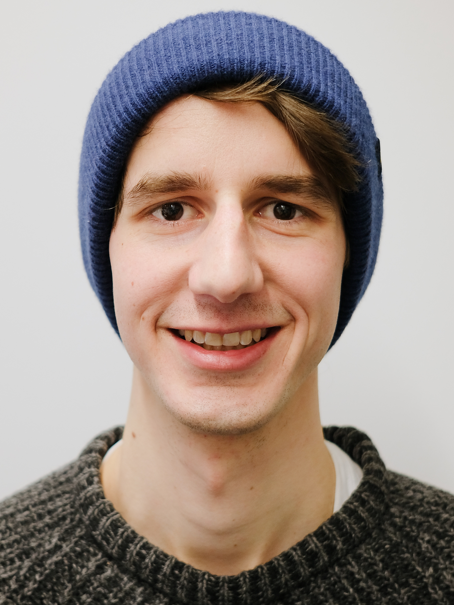
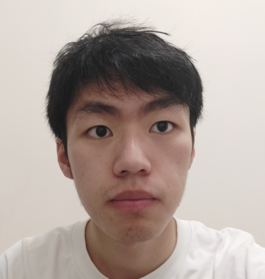
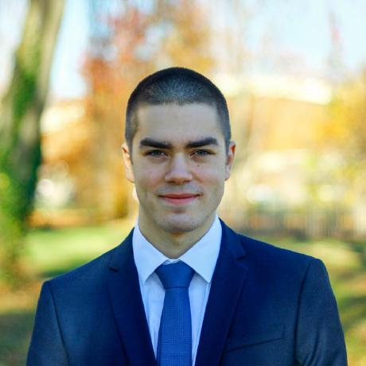
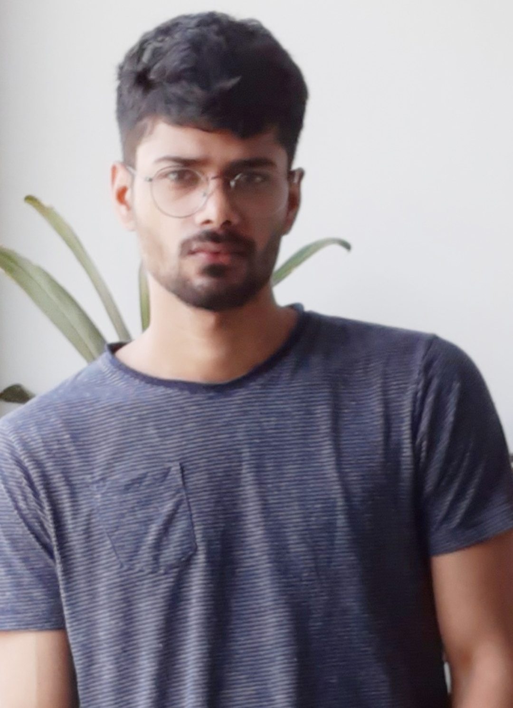

| 1 |
LEAP: Learning Articulated Occupancy of People Abstract: Substantial progress has been made on modeling rigid 3D objects using deep implicit representations. Yet, extending these methods to learn neural models of human shape is still in its infancy. Human bodies are complex and the key challenge is to learn a representation that generalizes such that it can express body shape deformations for unseen subjects in unseen poses. To address this challenge, we introduce LEAP (LEarning Articulated occupancy of People), a novel neural occupancy representation of the human body. Given a set of bone transformations and a query point in space, LEAP first maps the query point to a canonical space via learned linear blend skinning (LBS) functions and then efficiently queries the occupancy value via an occupancy network that models accurate identity- and posede-pendent deformations in the canonical space. Experiments show that our canonicalized occupancy estimation with the learned LBS functions greatly improves the generalization capability of the learned occupancy representation across various human shapes and poses. Bio: Marko Mihajlovic is a second year PhD student at ETH Zurich under the supervision of Prof. Dr. Siyu Tang. His research focuses on scene representations for realistic reconstruction of the 3D world around us and understanding how we, as humans, interact with the environment. |
|
| 2 |
Synergies Between Affordance and Geometry: 6-DoF Grasp Detection via Implicit Representations Abstract: Abstract—Grasp detection in clutter requires the robot to reason about the 3D scene from incomplete and noisy perception. In this work, we draw insight that 3D reconstruction and grasp learning are two intimately connected tasks, both of which require a fine-grained understanding of local geometry details. We thus propose to utilize the synergies between grasp affordance and 3D reconstruction through multi-task learning of a shared representation. Our model takes advantage of deep implicit functions, a continuous and memory-efficient representation, to enable differentiable training of both tasks. We train the model on self-supervised grasp trials data in simulation. Evaluation is conducted on a clutter removal task, where the robot clears clut- tered objects by grasping them one at a time. The experimental results in simulation and on the real robot have demonstrated that the use of implicit neural representations and joint learning of grasp affordance and 3D reconstruction have led to state-of- the-art grasping results. Our method outperforms baselines by over 10% in terms of grasp success rate. Additional results and videos can be found at https://sites.google.com/view/rpl-giga2021. |
|
| 3 |
Volume Rendering of Neural Implicit Surfaces Abstract: Neural volume rendering became increasingly popular recently due to its success in synthesizing novel views of a scene from a sparse set of input images. So far, the geometry learned by neural volume rendering techniques was modeled using a generic density function. Furthermore, the geometry itself was extracted using an arbitrary level set of the density function leading to a noisy, often low fidelity reconstruction. The goal of this paper is to improve geometry representation and reconstruction in neural volume rendering. We achieve that by modeling the volume density as a function of the geometry. This is in contrast to previous work modeling the geometry as a function of the volume density. In more detail, we define the volume density function as Laplace’s cumulative distribution function (CDF) applied to a signed distance function (SDF) representation. This simple density representation has three benefits: (i) it provides a useful inductive bias to the geometry learned in the neural volume rendering process; (ii) it facilitates a bound on the opacity approximation error, leading to an accurate sampling of the viewing ray. Accurate sampling is important to provide a precise coupling of geometry and radiance; and (iii) it allows efficient unsupervised disentanglement of shape and appearance in volume rendering. Applying this new density representation to challenging scene multiview datasets produced high quality geometry reconstructions, outperforming relevant baselines. Furthermore, switching shape and appearance between scenes is possible due to the disentanglement of the two. |
|
| 4 |

|
Neural Scene Graphs for Dynamic Scenes Abstract: Recent implicit neural rendering methods have demonstrated that it is possible to learn accurate view synthesis for complex scenes by predicting their volumetric density and color supervised solely by a set of RGB images. However, existing methods are restricted to learning efficient representations of static scenes that encode all scene objects into a single neural network, and lack the ability to represent dynamic scenes and decompositions into individual scene objects. In this work, we present the first neural rendering method that decomposes dynamic scenes into scene graphs. We propose a learned scene graph representation, which encodes object transformation and radiance, to efficiently render novel arrangements and views of the scene. To this end, we learn implicitly encoded scenes, combined with a jointly learned latent representation to describe objects with a single implicit function. We assess the proposed method on synthetic and real automotive data, validating that our approach learns dynamic scenes -- only by observing a video of this scene -- and allows for rendering novel photo-realistic views of novel scene compositions with unseen sets of objects at unseen poses. |
| 5 |
Shape As Points: A Differentiable Poisson Solver Abstract: In recent years, neural implicit representations gained popularity in 3D reconstruction due to their expressiveness and flexibility. However, the implicit nature of neural implicit representations results in slow inference time and requires careful initialization. In this paper, we revisit the classic yet ubiquitous point cloud representation and introduce a differentiable point-to-mesh layer using a differentiable formulation of Poisson Surface Reconstruction (PSR) that allows for a GPU-accelerated fast solution of the indicator function given an oriented point cloud. The differentiable PSR layer allows us to efficiently and differentiably bridge the explicit 3D point representation with the 3D mesh via the implicit indicator field, enabling end-to-end optimization of surface reconstruction metrics such as Chamfer distance. This duality between points and meshes hence allows us to represent shapes as oriented point clouds, which are explicit, lightweight and expressive. Compared to neural implicit representations, our Shape-As-Points (SAP) model is more interpretable, lightweight, and accelerates inference time by one order of magnitude. Compared to other explicit representations such as points, patches, and meshes, SAP produces topology-agnostic, watertight manifold surfaces. We demonstrate the effectiveness of SAP on the task of surface reconstruction from unoriented point clouds and learning-based reconstruction. Bio: I am Songyou Peng who is currently a PhD student at ETH Zurich and Max Planck Institute for Intelligent Systems. I am supervised by Prof. Marc Pollefeys and Prof. Andreas Geiger. My research interests lie at the intersection of deep learning and 3D vision. More specifically, I am interested in neural 3D scene representations and how to use them to effectively and efficiently describe the properties of a scene, like geometry, appearance, and semantics. |
|
| 6 |
Unconstrained Scene Generation with Locally Conditioned Radiance Fields Abstract: We tackle the challenge of learning a distribution over complex, realistic, indoor scenes. In this paper, we introduce Generative Scene Networks (GSN), which learns to decompose scenes into a collection of many local radiance fields that can be rendered from a free moving camera. Our model can be used as a prior to generate new scenes, or to complete a scene given only sparse 2D observations. Recent work has shown that generative models of radiance fields can capture properties such as multi-view consistency and view-dependent lighting. However, these models are specialized for constrained viewing of single objects, such as cars or faces. Due to the size and complexity of realistic indoor environments, existing models lack the representational capacity to adequately capture them. Our decomposition scheme scales to larger and more complex scenes while preserving details and diversity, and the learned prior enables high-quality rendering from viewpoints that are significantly different from observed viewpoints. When compared to existing models, GSN produces quantitatively higher-quality scene renderings across several different scene datasets. |
|
| 7 |
A-SDF: Learning Disentangled Signed Distance Functions for Articulated Shape Representation Abstract: Recent work has made significant progress on using implicit functions, as a continuous representation for 3D rigid object shape reconstruction. However, much less effort has been devoted to modeling general articulated objects. Compared to rigid objects, articulated objects have higher degrees of freedom, which makes it hard to generalize to unseen shapes. To deal with the large shape variance, we introduce Articulated Signed Distance Functions (A-SDF) to represent articulated shapes with a disentangled latent space, where we have separate codes for encoding shape and articulation. With this disentangled continuous representation, we demonstrate that we can control the articulation input and animate unseen instances with unseen joint angles. Furthermore, we propose a Test-Time Adaptation inference algorithm to adjust our model during inference. We demonstrate our model generalize well to out-of-distribution and unseen data, e.g., partial point clouds and real-world depth images. Bio: I am a second-year Ph.D. student in Electrical and Computer Engineering at UC, San Diego, advised by Xiaolong Wang and Nuno Vasconcelos. Prior to join UCSD, I received my M.S.E degree in Robotics from Johns Hopkins University advised by Alan Yuille, and B.E. degree in Mechanical Engineering from Shandong University. |
|
| 8 |
MVTN: Multi-View Transformation Network for 3D Shape Recognition Abstract: We propose a Multi-View Transformation Network (MVTN) that regresses better view-points for multi-view methods. Our MVTN leverages a differentiable renderer that enables end-to-end training for 3D shape recognition tasks. Combining MVTN with multi-view approaches leads to state-of-the-art results in 3D classification and shape retrieval on standard benchmarks ModelNet40, ShapeNet Core55, and ScanObjectNN. Additional analysis shows that MVTN improves the robustness of multi-view approaches to rotation and occlusion, making MVTN more practical for realistic scenarios, where 3D models are not perfectly aligned or partially cropped. |
|
| 9 |
GANcraft: Unsupervised 3D Neural Rendering of Minecraft Worlds Abstract: We present GANcraft, an unsupervised neural rendering framework for generating photorealistic images of large 3D block worlds such as those created in Minecraft. Our method takes a semantic block world as input, where each block is assigned a label such as dirt, grass, tree, sand, or water. We represent the world as a continuous volumetric function and train our model to render view-consistent photorealistic images from arbitrary viewpoints, in the absence of paired ground truth real images for the block world. In addition to camera pose, GANcraft allows user control over both scene semantics and style. |
|
| 10 |

|
NeuS: Learning Neural Implicit Surfaces by Volume Rendering for Multi-view Reconstruction Abstract: We present a novel neural surface reconstruction method, called NeuS, for reconstructing objects and scenes with high fidelity from 2D image inputs. Existing neural surface reconstruction approaches, such as DVR and IDR, require foreground mask as supervision, easily get trapped in local minima, and therefore struggle with the reconstruction of objects with severe self-occlusion or thin structures. Meanwhile, recent neural methods for novel view synthesis, such as NeRF and its variants, use volume rendering to produce a neural scene representation with robustness of optimization, even for highly complex objects. However, extracting high-quality surfaces from this learned implicit representation is difficult because there are not sufficient surface constraints in the representation. In NeuS, we propose to represent a surface as the zero-level set of a signed distance function (SDF) and develop a new volume rendering method to train a neural SDF representation. We observe that the conventional volume rendering method causes inherent geometric errors (i.e. bias) for surface reconstruction, and therefore propose a new formulation that is free of bias in the first order of approximation, thus leading to more accurate surface reconstruction even without the mask supervision. Experiments on the DTU dataset and the BlendedMVS dataset show that NeuS outperforms the state-of-the-arts in high-quality surface reconstruction, especially for objects and scenes with complex structures and self-occlusion. |
| 11 |

|
Representing Shape Collections with Alignment-Aware Linear Models Abstract: In this paper, we revisit the classical representation of 3D point clouds as linear shape models. Our key insight is to leverage deep learning to represent a collection of shapes as affine transformations of low-dimensional linear shape models. Each linear model is characterized by a shape prototype, a low-dimensional shape basis and two neural networks. The networks take as input a point cloud and predict the coordinates of a shape in the linear basis and the affine transformation which best approximate the input. Both linear models and neural networks are learned end-to-end using a single reconstruction loss. The main advantage of our approach is that, in contrast to many recent deep approaches which learn feature-based complex shape representations, our model is explicit and every operation occurs in 3D space. As a result, our linear shape models can be easily visualized and annotated, and failure cases can be visually understood. While our main goal is to introduce a compact and interpretable representation of shape collections, we show it leads to state of the art results for few-shot segmentation. |
| 12 |
|
DiGS : Divergence Guided Shape Implicit Neural Representation for Unoriented Point Clouds Abstract: Neural shape representations have recently shown to be effective in shape analysis and reconstruction tasks. Existing neural network methods require point coordinates and corresponding normal vectors to learn the implicit level sets of the shape. Normal vectors are often not provided as raw data, therefore, approximation and reorientation are required as pre-processing stages, both of which can introduce noise. In this paper, we propose a divergence guided shape representation learning approach that does not require normal vectors as input. We show that incorporating a soft constraint on the divergence of the distance function favours smooth solutions that reliably orients gradients to match the unknown normal at each point, in some cases even better than approaches that use ground truth normal vectors directly. Additionally, we introduce a novel geometric initialization method for sinusoidal shape representation networks that further improves convergence to the desired solution. We evaluate the effectiveness of our approach on the task of surface reconstruction and show state-of-the-art performance compared to other unoriented methods and on-par performance compared to oriented methods. |
| 13 |
SNARF: Differentiable Forward Skinning for Animating Non-Rigid Neural Implicit Shapes Abstract: Neural implicit surface representations have emerged as a promising paradigm to capture 3D shapes in a continuous and resolution-independent manner. However, adapting them to articulated shapes is non-trivial. Existing approaches learn a backward warp field that maps deformed to canonical points. However, this is problematic since the backward warp field is pose dependent and thus requires large amounts of data to learn. To address this, we introduce SNARF, which combines the advantages of linear blend skinning (LBS) for polygonal meshes with those of neural implicit surfaces by learning a forward deformation field without direct supervision. This deformation field is defined in canonical, pose-independent space, allowing for generalization to unseen poses. Learning the deformation field from posed meshes alone is challenging since the correspondences of deformed points are defined implicitly and may not be unique under changes of topology. We propose a forward skinning model that finds all canonical correspondences of any deformed point using iterative root finding. We derive analytical gradients via implicit differentiation, enabling end-to-end training from 3D meshes with bone transformations. Compared to state-of-the-art neural implicit representations, our approach generalizes better to unseen poses while preserving accuracy. We demonstrate our method in challenging scenarios on (clothed) 3D humans in diverse and unseen poses. |
|
| 14 |
Hand-Object Contact Consistency Reasoning for Human Grasps Generation Abstract: While predicting robot grasps with parallel jaw grippers have been well studied and widely applied in robot manipulation tasks, the study on natural human grasp generation with a multi-finger hand remains a very challenging problem. In this paper, we propose to generate human grasps given a 3D object in the world. Our key observation is that it is crucial to model the consistency between the hand contact points and object contact regions. That is, we encourage the prior hand contact points to be close to the object surface and the object common contact regions to be touched by the hand at the same time. Based on the hand-object contact consistency, we design novel objectives in training the human grasp generation model and also a new self-supervised task which allows the grasp generation network to be adjusted even during test time. Our experiments show significant improvement in human grasp generation over state-of-the-art approaches by a large margin. More interestingly, by optimizing the model during test time with the self-supervised task, it helps achieve larger gain on unseen and out-of-domain objects. |
|
| 15 |
In-Place Scene Labelling and Understanding with Implicit Scene Representation Abstract: We show that neural radiance fileds (NeRF) contains strong priors for scene cluster and segmentation. The internal multi-view consistency and smoothness make the training process itself a multi-view semantic fusion process. Such a scene-specific implcit semantic representation can be efficiently learned with various sparse or noisy annotations, leading to accurate dense labelling of the full scene. |
|
| 16 |
Holistic 3D Scene Understanding from a Single Image with Implicit Representation Abstract: We present a new pipeline for holistic 3D scene understanding from a single image, which could predict object shapes, object poses, and scene layout. As it is a highly ill-posed problem, existing methods usually suffer from inaccurate estimation of both shapes and layout especially for the cluttered scene due to the heavy occlusion between objects. We propose to utilize the latest deep implicit representation to solve this challenge. We not only propose an image-based local structured implicit network to improve the object shape estimation, but also refine the 3D object pose and scene layout via a novel implicit scene graph neural network that exploits the implicit local object features. A novel physical violation loss is also proposed to avoid incorrect context between objects. Extensive experiments demonstrate that our method outperforms the state-of-the-art methods in terms of object shape, scene layout estimation, and 3D object detection. |
|
| 17 |
Persistent Homology and Graphs Representation Learning Abstract: This article aims to study the topological invariant properties encoded in node graph representational embeddings by utilizing tools available in persistent homology. Specifically, given a node embedding representation algorithm, we consider the case when these embeddings are real-valued. By viewing these embeddings as scalar functions on a domain of interest, we can utilize the tools available in persistent homology to study the topological information encoded in these representations. Our construction effectively defines a unique persistence-based graph descriptor, on both the graph and node levels, for every node representation algorithm. To demonstrate the effectiveness of the proposed method, we study the topological descriptors induced by DeepWalk, Node2Vec and Diff2Vec. |
|
| 18 |

|
MeronymNet: A Hierarchical Approach for Unified and Controllable Multi-Category Object Generation Abstract: We introduce MeronymNet, a novel hierarchical approach for controllable, part-based generation of multi-category objects using a single unified model. We adopt a guided coarse-to-fine strategy involving semantically conditioned generation of bounding box layouts, pixel-level part layouts and ultimately, the object depictions themselves. We use Graph Convolutional Networks, Deep Recurrent Networks along with custom-designed Conditional Variational Autoencoders to enable flexible, diverse and category-aware generation of 2-D objects in a controlled manner. The performance scores for generated objects reflect MeronymNet's superior performance compared to multiple strong baselines and ablative variants. We also showcase MeronymNet's suitability for controllable object generation and interactive object editing at various levels of structural and semantic granularity. |
| 19 |
UNISURF: Unifying Neural Implicit Surfaces and Radiance Fields for Multi-View Reconstruction Abstract: Neural implicit 3D representations have emerged as a powerful paradigm for reconstructing surfaces from multi- view images and synthesizing novel views. Unfortunately, existing methods such as DVR or IDR require accurate per- pixel object masks as supervision. At the same time, neu- ral radiance fields have revolutionized novel view synthesis. However, NeRF’s estimated volume density does not admit accurate surface reconstruction. Our key insight is that im- plicit surface models and radiance fields can be formulated in a unified way, enabling both surface and volume render- ing using the same model. This unified perspective enables novel, more efficient sampling procedures and the ability to reconstruct accurate surfaces without input masks. We compare our method on the DTU, BlendedMVS, and a syn- thetic indoor dataset. Our experiments demonstrate that we outperform NeRF in terms of reconstruction quality while performing on par with IDR without requiring masks. |
|
| 20 |
Neural Splines: Fitting 3D Surfaces with Inifinitely-Wide Neural Networks Abstract: We present Neural Splines, a technique for 3D surface reconstruction that is based on random feature kernels arising from infinitely-wide shallow ReLU networks. Our method achieves state-of-the-art results, outperforming recent neural network-based techniques and widely used Poisson Surface Reconstruction (which, as we demonstrate, can also be viewed as a type of kernel method). Because our approach is based on a simple kernel formulation, it is easy to analyze and can be accelerated by general techniques designed for kernel-based learning. We provide explicit analytical expressions for our kernel and argue that our formulation can be seen as a generalization of cubic spline interpolation to higher dimensions. In particular, the RKHS norm associated with Neural Splines biases toward smooth interpolants. |


Contact Info
E-mail: 3dreps@gmail.com